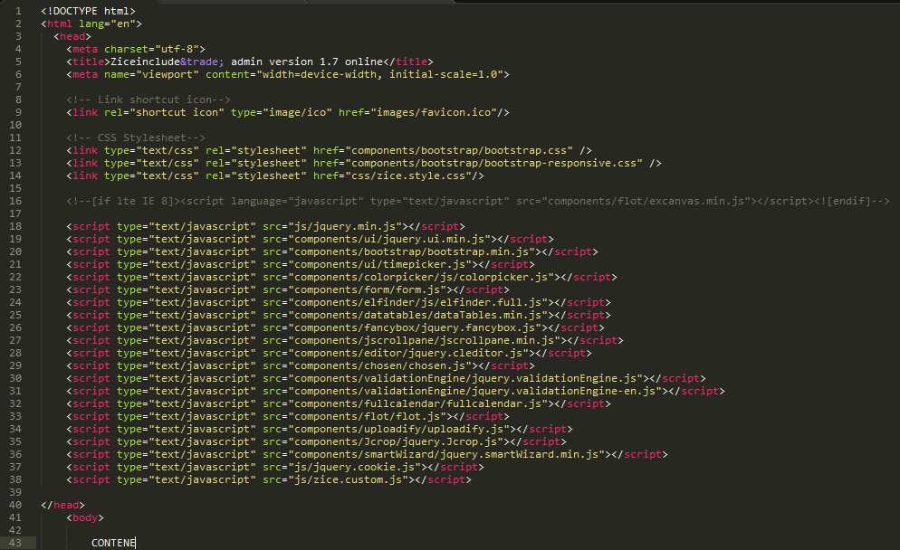
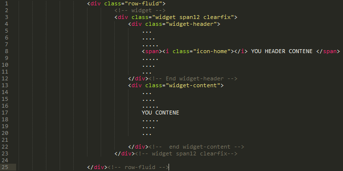
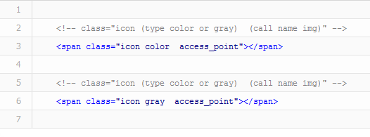
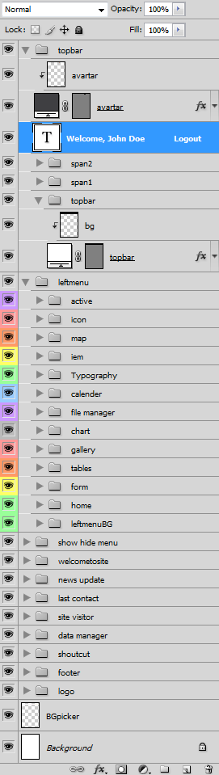

Created: 06/01/2013
By: Pinyo Pungfueng
Email: zicedemo@gmail.com
Thank you for purchasing my theme. If you have any questions that are beyond the scope of this help file, please feel free to email via my user page contact form here. Thanks so much!
This template can be used as an fixed and fluid layout based on Bootstrap Framework from Twitter. Here is the general structure.


icon used :

Zice Admin! includes a number of CSS files that are used for display the website. All CSS files, can be found in the Template's /css/ folder and components folder.
The CSS file :
Zice Admin Themes uses the following javascript files:
jQuery is a fast and concise JavaScript Library that simplifies HTML document traversing, event handling, animating, and Ajax interactions for rapid web development. jQuery is designed to change the way that you write JavaScript.
This includes all the necessary scripts needed for all the pages.
jQuery UI provides a comprehensive set of core interaction plugins, UI widgets and visual effects that use a jQuery-style, event-driven architecture and a focus on web standards, accessiblity, flexible styling, and user-friendly design. All plugins are tested for compatibility in IE 6.0+, Firefox 3+, Safari 3.1+, Opera 9.6+, and Google Chrome.
The timepicker addon adds a timepicker to jQuery UI Datepicker, thus the datepicker and slider components (jQueryUI) are required for using any of these. In addition all datepicker options are still available through the timepicker addon.
Autotab is a jQuery plugin that provides auto-tabbing and filtering on text fields in a form. Once the maximum number of characters has been reached within a defined text fields, the focus is automatically set to the defined target of the element. Likewise, clearing out the text field’s content by pressing backspace eventually places the focus on the elements previous target
jRumble is a jQuery plugin that rumbles, vibrates, shakes, and rotates any element you choose. It's great to use as a hover effect or a way to direct attention to an element.
The BCC library is a open-source library for barcode generation with the objective to be ported in as many language as possible. Each port will contain the version number of the BCC library and the version number of the port.
Elastic makes your textareas grow and shrink to fit it’s content. It was inspired by the auto growing textareas on Facebook. The major difference between Elastic and it’s competitors is it’s weight.
This is a masked input plugin for the jQuery javascript library. It allows a user to more easily enter fixed width input where you would like them to enter the data in a certain format (dates,phone numbers, etc). It has been tested on Internet Explorer, Firefox, Safari and Chrome.A mask is defined by a format made up of mask literals and mask definitions. Any character not in the definitions list below is considered a mask literal. Mask literals will be automatically entered for the user as they type and will not be able to be removed by the user.The following mask definitions are predefined:
Jcrop is the quick and easy way to add image cropping functionality to your web application. It combines the ease-of-use of a typical jQuery plugin with a powerful cross-platform DHTML cropping engine that is faithful to familiar desktop graphics applications.
This plug-in allows you to apply 2D transformations in all CSS3 capable browsers as well as Internet Explorer. This plug-in works in Firefox 3.5+, Safari 3.1+, Chrome, Opera 10.5+ and IE 5.5+. It adds additional support in IE for transform-origin and translate() by using relative positioning. Because IE only supports matrix(), the Sylvester library is used to calculate the matrices automatically.
Smart Wizard is a flexible jQuery plug-in for wizard like interface. It allows to group contents into sections and so it saves page space and also gives a neat and stylish interface for users.
File Style Plugin for jQuery. Browsers do not let you style file inputs. File Style plugin fixes this problem. It enables you to use image as browse button. You can also style filename field as normal textfield using css. It is written using JavaScript and jQuery.
This plugin for easy and simple vertical news automatic scrolling.
FullCalendar is a jQuery plugin that provides a full-sized, drag & drop calendar like the one below. It uses AJAX to fetch events on-the-fly for each month and is easily configured to use your own feed format (an extension is provided for Google Calendar). It is visually customizable and exposes hooks for user-triggered events (like clicking or dragging an event). It is open source and dual licensed under the MIT or GPL Version 2 licenses.
Uploadify is a jQuery plugin that integrates a fully-customizable multiple file upload utility on your website. It uses a mixture of Javascript, ActionScript, and any server-side language to dynamically create an instance over any DOM element on a page.
Sourcerer is a jQuery plugin that embeds and highlights source code. You can see the effect of this plugin throughout this site. The viewer will display HTML, CSS, Javascript, and PHP.
DataTables is a plug-in for the jQuery Javascript library. It is a highly flexible tool, based upon the foundations of progressive enhancement, which will add advanced interaction controls to any HTML table.
CLEditor is an open source jQuery plugin which provides a lightweight, full featured, cross browser, extensible, WYSIWYG HTML editor that can be easily added into any web site.
elFinder is an open-source file manager for web, written in JavaScript using jQuery UI. As you can see its creation is inspired by simplicity and convenience of Finder program used in Mac OS X operating system.
FancyBox is a tool for displaying images, html content and multi-media in a Mac-style "lightbox" that floats overtop of web page.
jScrollPane is a cross-browser jQuery plugin by Kelvin Luck which converts a browser's default scrollbars (on elements with a relevant overflow property) into an HTML structure which can be easily skinned with CSS.
Tipsy is a jQuery plugin for creating a Facebook-like tooltips effect based on an anchor tag's title attribute.
This is for making form Validations range from email, phone, url to more complex calls such as ajax processing. Bundled in several locales, the error prompts can be translated in the locale of your choice.
This is for making the checkboxes form
Flot is a pure Javascript plotting library for jQuery. It produces graphical plots of arbitrary datasets on-the-fly client-side. The focus is on simple usage (all settings are optional), attractive looks and interactive features like zooming and mouse tracking. The plugin works with Internet Explorer 6+, Firefox 2.x+, Safari 3.0+, Opera 9.5+ and Konqueror 4.x+ with the HTML canvas tag (the excanvas Javascript emulation helper is used for IE < 9).
I've included three psds in this theme: ziceAdmin.psd
Everything can be found in the PSD. Everything is nicely layered and every box has his own map.

I've used the following images, icons or other files as listed.
I've included three php file :
Free Bonus included three 9 php file :
MY SQL Setup:
Once again, thank you so much for purchasing this theme. As I said at the beginning, I'd be glad to help you if you have any questions relating to this theme. No guarantees, but I'll do my best to assist. If you have a more general question relating to the themes on ThemeForest, you might consider visiting the forums and asking your question in the "Item Discussion" section.
Pinyo Pungfueng